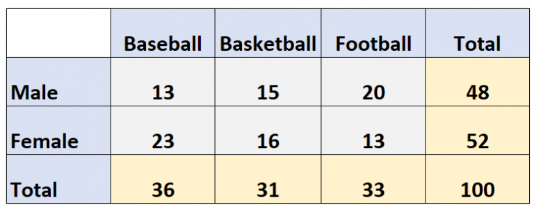
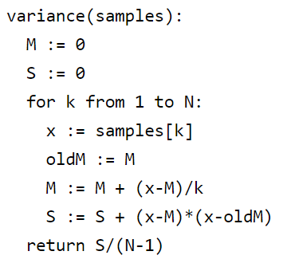
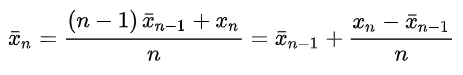
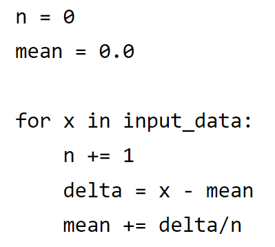

Researches about pure theory (T)
T5. Illustrate the concept of conditional, joint, marginal (relative) frequency using a simple bivariate distributionResearches about applications (A)
A5. Create a distribution from the data obtained by the sniffer Wireshark by reading the CSV file or realtime data generated by the programResearches about theory relevant to applications (TA)
TA3. A survey on ONLINE algorithms (mean, variance, median, etc...)T5.
Let's consider this dataset showing a bivariate distribution:

We define joint relative frequency as how many times a combination of two conditions happens together.
It is calculated by doing Joint Frequency / Total Frequency.
The formula is P(A ∩ B) = P(A ∩ B) / P(Total).
So every single grey value is a joint frequency.
For example:
P(Male ∩ Basket) = 13/100 = 0.13 = 13%
P(Female ∩ Basketball) = 16/100 = 0.16 = 16%
We define marginal relative frequency as the ratio between the frequency of a row total or column total to the total frequency of the statistical units.
It is calculated by doing Row (or Column) / Total Frequency.
In our example the yellow values (except the 100) are marginal frequencies.
For example:
P(Male) = 48/100 = 0.48 = 48%
P(Football) = 33/100 = 0.33 = 33%
We define conditional relative frequency as a fraction that tells you how many members of a group have a particular characteristic.
More technically, it is the ratio of a frequency in the center of the table (joint relative frequency) to the frequency’s row total or column total (marginal relative frequency).
The formula is P(A | B) = P(A ∩ B) / P(B).
For example:
Knowing that they are males how many of them like football?
P(Football | Male) = P(Football ∩ Male) / P(Male) = 20/48 = 0.416 = 41.6%
Knowing that they like basketball, how many of them are females?
P(Female | Basketball) = P(Female ∩ Basketball) / P(Basketball) = 16/31 = 0.516 = 51.6%
T6.
Two events A and B are statistical independent if:
P(A | B) = P(A)
Informally speaking, the occurrence of one does not affect the probability of the occurrence of the other one.
So, we have also that their join probability is equals to the product of their probabilities P(A ∩ B) = P(A)P(B).
To better understand the concept, let us make an example with the dataset from the previous section (ipotetical case).
Knowing that they like basketball, how many also like baseball?
P(Baseball | Basketball) = P(Baseball) = 36/100 = 0.36 = 36%
Because the fact that a person like basketball does not affect the fact that he likes baseball (maybe in real life there could be a connection).
A5.
FRA FRA
TA3.
An online algorithm is one that can process its input piece-by-piece in a serial fashion, i.e., in the order that the input is fed to the algorithm,
without having the entire input available from the beginning. They avoid the problem of instability and overflow.
In contrast, an offline algorithm is given the whole problem data from the beginning and is required to output an answer which solves the problem at hand.
As an example, consider the sorting algorithms selection sort and insertion sort:
the selection sort algorithm sorts an array by repeatedly finding the minimum element (considering ascending order) from unsorted part and putting
it at the beginning, which requires access to the entire input; it is thus an offline algorithm.
On the other hand, insertion sort considers one input element per iteration and produces a partial
solution without considering future elements. Thus insertion sort is an online algorithm.
An example of an online algorithm is the Welford’s online algorithm, which is often useful to be able to compute the variance,
measure of how far a set of numbers is spread out from their average value.
A formula for calculating the variance of an entire population of size N is (offline algorithm):
On the other hand Welford’s method is a usable single-pass method for computing the variance.
It can be derived by looking at the differences between the sums of squared differences for N and N-1 samples.
An example of the implementation for Welford's algorithm:

It is possible to calculate different values with an online algorithm like the median thanks for example to the insertion sort and also
the mean through Knuth’s algorithm (analysed in the next section).
TA4.
The quick way to calculate the mean value of a sample is first adding up all the numbers in the sample and then dividing this total by the number of sample.
The offline way of calculating the average can lead to errors and instability, like the drop of the floating value, so it is preferable to use the online version.
Knuth’s algorithm computes the mean iteratively.
This means that at each step, the value for the mean computed with the first n-1 inputs, it’s updated when the input xn is received.
The formula used in this algorithm is the following:

And an example of the algorithm in pseudocode is:
